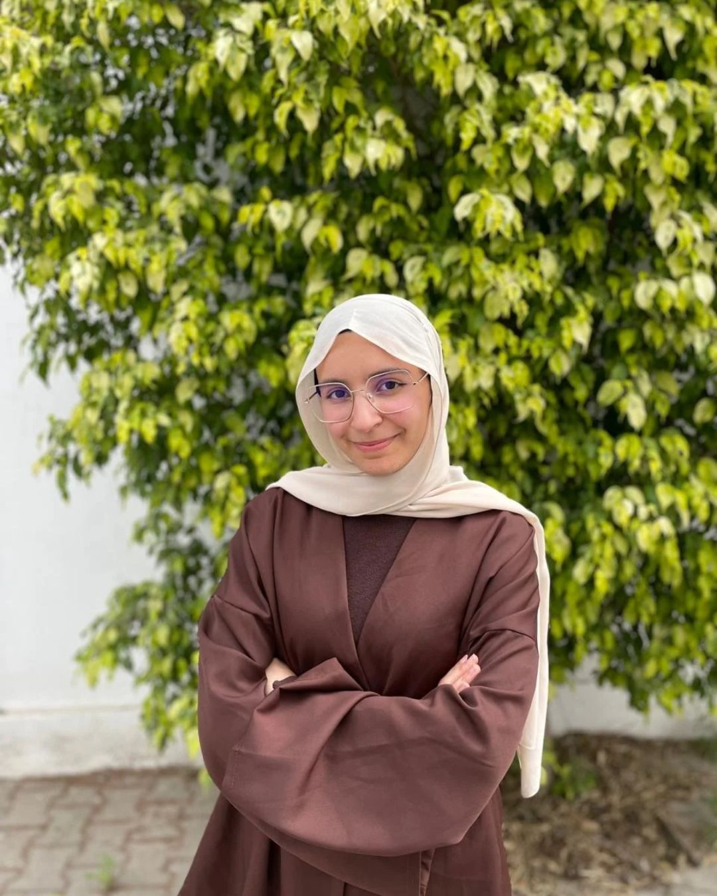

National Engineering School of Tunis
Telecommunications engineering student focused on embedded intelligence, communication systems, signal processing, and practical innovation.
I’m Azza Hamdi, a telecommunications engineering student especially interested in IoT, embedded systems, Edge AI, and intelligent technologies. I enjoy building technology that connects intelligence, communication, and creativity.

I don't believe in choosing between technical precision and creative expression. I thrive in both.
At the National Engineering School of Tunis (ENIT), I study telecommunications engineering and am especially interested in IoT, embedded systems, Edge AI, and intelligent technologies. I enjoy building systems that connect communication, intelligence, and creativity.
Outside the lab, I'm a violin and oud player, an IEEE media leader, and the founder of a small crochet business. Each of these worlds has taught me how to bring ideas to life — with care, creativity and persistence.
Hands-on learning, documented and shared.
Telecommunications engineering student focused on embedded intelligence, communication systems, signal processing, and practical innovation.
Media Manager, leading a team of five media managers at the IEEE student association.
Running a crochet business and using design, craftsmanship, and storytelling to turn ideas into tangible, human-centered experiences.
A selection of my creative work, exploring visual storytelling, branding, and digital design.
I've been a musician since 2015, playing both the violin and the oud. Music has taught me patience, expression, listening, and the beauty of constant practice.
Since 2023, I’ve run my own crochet business, combining craftsmanship, creative direction and entrepreneurship to make thoughtful handmade pieces.